A Living Azeroth
Systems design for a world that reads as inhabited rather than as a static diorama with mobs standing in assigned boxes.
The chronicles of this world are full of wars its roads have never carried. The camps face each other across the grass, and nothing happens.
The quest text says the Kolkar are breaking through Horde lines. The zone descriptions say the Venture Company is stripping Stonetalon bare. The faction ledgers say the Steamwheedle Cartel and the Venture Company are at open commercial war. A traveler on those roads would see none of it.
Almost every proposal here follows the same method: find something the existing lore already asserts, and make the world show it.
As of August 2026, Blizzard has not announced a product called "Classic+". What is on the record is narrower: at the State of Azeroth stream on January 29, 2026, Blizzard said that clarity on Classic's future and Anniversary realm progression would come at BlizzCon 2026, confirmed for September 12 and 13 in Anaheim.
Everything else is community inference built on a real but ambiguous evidence base: the "Project Camelot" datamine, a sustained run of encrypted internal builds tagged around version 1.60, private server takedowns, and a May 2026 creator summit under NDA.
Every proposal in this document is sorted on five independent axes. Read linearly, the disagreement between them is invisible. Pivoted, it is the argument: cheap behavioral work is what makes the expensive architectural work viable, and risk, cost, and deployment path are three different questions.
{{ ax.values }}
{{ ax.note }}
The cheapest immersion win in the game is idle animation variety tied to what a faction does for a living. None of it asks for new combat behavior or quest hooks. The whole brief is work, rest, and the hours between shifts.
The graveyards of Duskwood are worked at night, and not by mourners. The robbers the zone already posts there stand still at their plots; give them the work the fiction assigns them. Kneel and dig, pry at a lid, straighten up, move to the next grave. A rare variant has two of them shoving each other over something pulled from the earth, which sells criminals rather than sentries. Duskwood already carries a grave robbing story through Abercrombie, and the ambient behavior should look like the same world that produced him.
Windshear Crag has been stripped to the stumps by Venture Company logging under Gerenzo Wrenchwhistle, and the zone shows almost none of the work in motion. Let the chain be seen end to end: a chopper crew felling a marked tree, a shredder hauling the log to the stacking yard, a foreman checking loads between hauls. The stacked lumber is the cargo for Section 2.
The same argument runs through Bloodsail camps that are patrol grids instead of camps, Dark Iron crews probing Loch Modan toward Ironforge, and the Booty Bay docks, which are a functioning port in fiction and a static backdrop in practice.
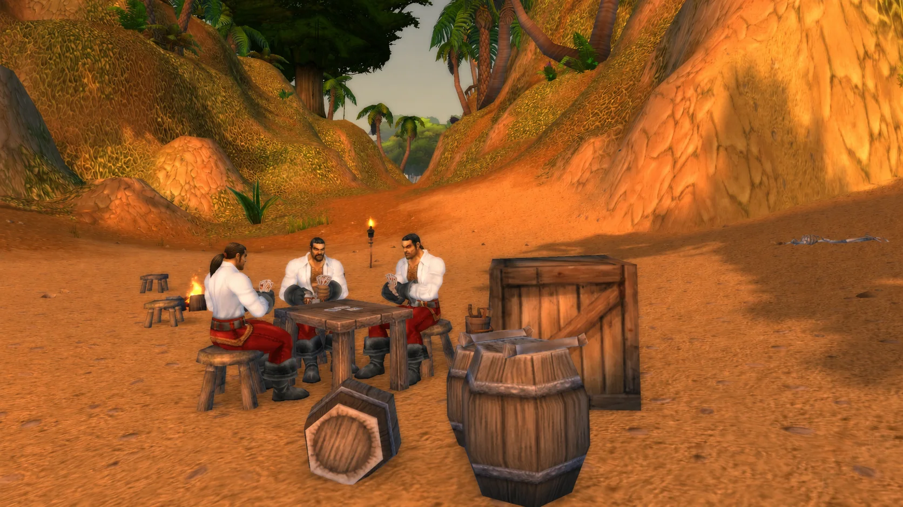
Routines rather than headcount
Adding NPCs without adding behavior produces a crowd of statues. Stormwind's orphans play near the Cathedral steps by day and are called inside at dusk. Ironforge miners travel the road out toward Gol'Bolar Quarry instead of standing at a fixed post. Grunts spar in the Ring of Valor while patrols rotate between the Valley of Strength and the Valley of Wisdom. Booty Bay is already the chaos city by design and should be the densest and most visibly transactional of the four.
The Park district and the guild that stopped working
Stormwind's Park district is unfinished and the reason is standing in the keep. The Stonemasons Guild rebuilt the city after the Second War, was not paid, and was ordered disbanded when Edwin VanCleef demanded restitution. None of that needs narrating. It needs dressing: idle masons, unfinished stonework, tools and cut blocks left where a crew walked off. A player who has run the Deadmines and then notices the Park has assembled the connection themselves.
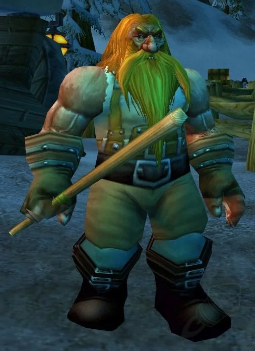
Veron Amberstill breeds rams outside Kharanos. The job is in the quest text and the title over his head, and nowhere in what he actually does with his hands.
Reference · Dun MoroghThe roads of this world were paved for traffic they have never carried. Put carts and wagons on them in earnest, on real routes, which a player can ride beside, escort, rob, or simply watch go past. This is the load-bearing feature of the whole document, because it connects the ambient layer to the economic layer.
Vanilla already contains every component. It has escort quests with NPCs pathing long distances under attack, including Miran's run through Loch Modan and Gilthares Firebough's run from Northwatch Hold to Ratchet. It has NPCs running circuits between named locations, notably the Defias Messenger. What it does not have is that behavior as standing world furniture rather than as a quest object.
Kalimdor's web should read as opportunistic and recent: Venture lumber down the Talondeep Path, a supply wagon on the Gold Road subject to Kolkar raids, a second Venture route through the Shimmering Flats toward Gadgetzan. Eastern Kingdoms should read as centuries deep. The accounts hold Loch Modan among the most peaceful regions on the continent behind Algaz Gate, and its routes should feel worn in: standing checkpoints, established schedules, roads with names.
The cost of robbery
The answer is already sitting in vanilla's reputation system. Steamwheedle reputation is a single shared bar across four cities, so dropping far enough makes bruisers hostile in all of them at once and costs auction house access at three. Venture wagons are already hostile, so they cost nothing and are the entry-level target. Steamwheedle wagons are the only version with an actual decision inside them. Repeatedly hitting cartel cargo should raise Bloodsail standing, which turns that grind from killing bruisers until they hate you into actually behaving like a blockade runner.
Route funneling and the chokepoints the map already has
A caravan system with traffic spread evenly across the map is scenery. One where a few crossings carry nearly everything has geography with stakes, and the chokepoints already exist. Every crossing between the continents runs through a boat. The land route from Arathi crosses the Thandol Span. Dun Algaz is the only pass from the Wetlands toward Loch Modan. Weight the routes accordingly and Menethil becomes the most valuable point on the continent.
A wagon under escort on a road players already walk. The Gold Road between the Crossroads and Camp Taurajo, or the Ironforge run through Dun Algaz.
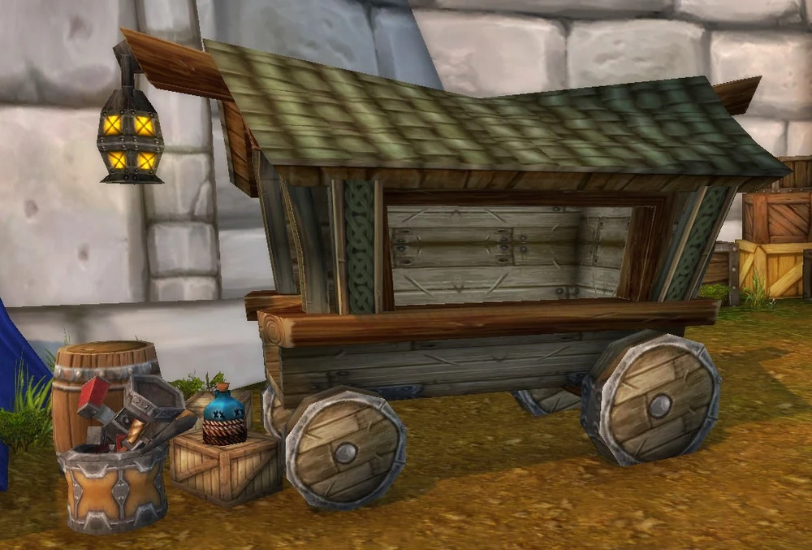
The human carriage model, already in the client and already correct for a Stormwind to Sentinel Hill run.
Model · Human carriage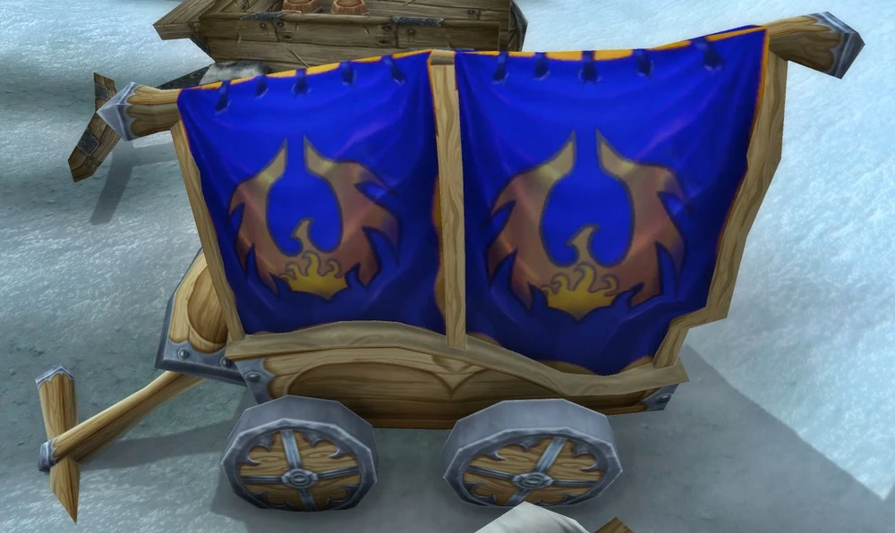
The Quel’dorei carriage. A second faction silhouette for the same system, no new art required.
Model · Quel’dorei carriageThe Steamwheedle Cartel controls Booty Bay, Ratchet, Gadgetzan, and Everlook. It is neutral by policy, profitable because of that neutrality, and in direct commercial competition with the Venture Company, with neither side above sabotage or murder. A fully formed commercial war sits unused in the fiction: Venture appears only as hostile mobs at work sites, Steamwheedle only as auction house stops, and nothing on any road connects them.
Venture is the extraction arm and Steamwheedle is the buyer and redistributor. The friction point is a shipment moving between Ratchet and Booty Bay, harassed by Bloodsail raiders along the Stranglethorn coast, which turns the Bloodsail from a static reputation grind into a visible commercial threat.
The strongest argument for the whole network is not mechanical. It is that the Steamwheedle cities physically cannot supply themselves, and the map has been saying so since 2004.
All four sit where nobody else wanted to be. Booty Bay is built into a cliff face in hostile jungle. Ratchet is a landing on a barren coast. Gadgetzan is in the middle of a desert. Everlook is in a frozen valley above a cloud bank, reachable on foot only through a furbolg tunnel. Everlook cannot produce what Everlook sells. So the caravan system is not something being added to the world. It is something the world has implied for twenty years and never drawn.
A Steamwheedle city that visibly cannot supply itself. Everlook in a frozen valley above the cloud bank is the strongest case, since it is reachable on foot only through a furbolg tunnel.
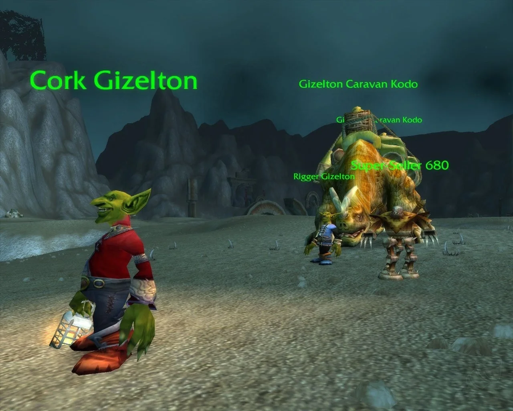
The Gizelton Caravan in Desolace is the precedent. An escorted cargo train that walks a real route and can be attacked on it.
Reference · Desolace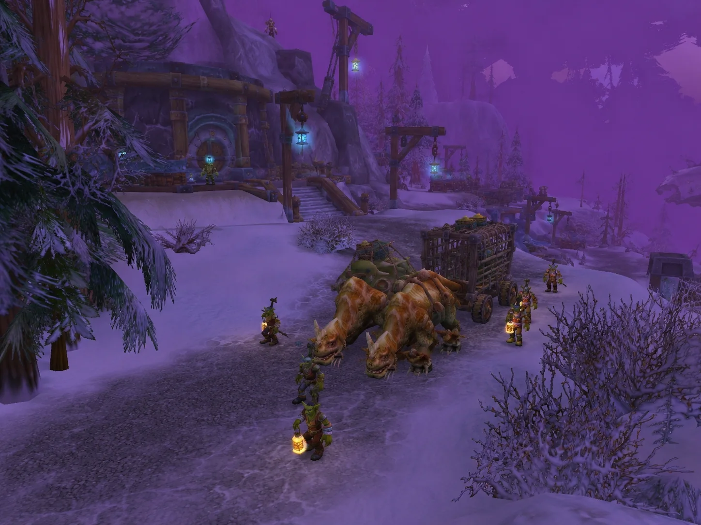
Pack kodo and a loaded cart outside Everlook. The cargo network the document proposes is a generalisation of what this camp already implies.
Reference · WinterspringVanilla's beasts are combat units with animal models. Every one of them notices you at the same radius, approaches the same way, and stands in the same place until it does.
A wolf pack worth the name sends one or two ahead, low and at a distance, before the rest commit together. Bears keep to themselves and range widely between a den and a feeding ground. Crocolisks sit submerged and breach at the bank rather than standing visible in shallow water. Spiders anchor to a web rather than roaming. Turtles retreat or flee instead of fighting, because passive creatures should have a passive identity rather than being aggressive creatures with lower numbers.
Rest cycles carry the largest gameplay consequence in the section. A pack that beds down near a den for a real window, aggro-immune at range and waking only if physically disturbed, creates a live decision: sneak past, or wake the den deliberately because you want the kills.
Creatures reacting to the dead
Death in Azeroth is inert. A corpse greys out and despawns and nothing registers that it was ever there. Make corpses attractants, and the delay is the whole thing: scavengers must never spawn onto a fresh kill. Thirty seconds to a couple of minutes before anything arrives. Instant scavenging reads as a mechanic aimed at the player. A delay reads as the world noticing a body on its own schedule. The common case is that the player has already moved on and never sees it, and that is correct.
Feeding differs by scavenger, because the animation is the storytelling. Ghouls crouch and feed in place. Carrion birds land and pick. Spiders wrap the corpse and haul it back toward the web, which is the only scavenger that removes the body rather than sitting on it. Oozes flow over and dissolve.
A stretch of road where players keep dying silently accrues attention, and past a threshold the place starts to feel wrong: more carrion birds circling than the zone should carry, a ghoul that wandered in from further out than its normal range. Attention decays, which is what keeps it from becoming a farm. A veteran rides down a road, notices the birds are heavier than they should be, and understands that people have been dying here. That is the world telling the player something true about itself, expressed as circling crows.
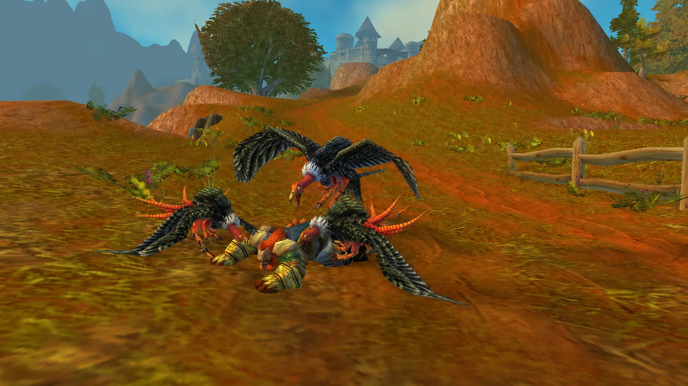
There is a behavioral gap between beasts and civilized factions that vanilla never dramatizes. Gnolls, murlocs, kobolds, harpies, and quilboar have camps, hierarchy, tools, and territory, but they are not the Defias or the Scarlet Crusade. They should read as neither.
Gnolls are built on hyena social structure, so show a crude hierarchy: a larger named model eating first, smaller ones squabbling over what is left, and stolen goods piled in a camp rather than existing only in a drop table. Murlocs are the best case in the game for just above animal, because their identity is a screeching alarm network rather than individuals. Kobolds should be visibly the weakest of the tier, prone to breaking as a group when their strongest member dies. Harpies perch and dive rather than holding ground camps.
Quilboar have the strongest lore in the tier and it points somewhere specific. Agamaggan was killed during the War of the Ancients, and where his blood fell, thorn-ridden vines rose from the ground.
It is his blood and not his quills, which changes the image entirely. The Razorfen is not a carcass the quilboar live inside. It is what the soil did afterward. That reframes the race: quilboar do not build, they tend. A camp should read as horticulture rather than construction, with thorn walls grown and trained rather than assembled and no cut ends anywhere in the structure.
It also hands Section 4 something it otherwise lacks, a plant that behaves like a creature. Thorns with a slow growth response, thickening where quilboar tend them and receding where they have been driven off, are the clearest possible readout of who currently holds a piece of ground. Quilboar defend ground. Gnolls raid it. That distinction should be legible without reading a single quest.
A camp that reads as horticulture rather than construction. What matters is the absence of cut ends: thorn walls grown and trained, with the largest thorn mass at the centre of what they are tending.
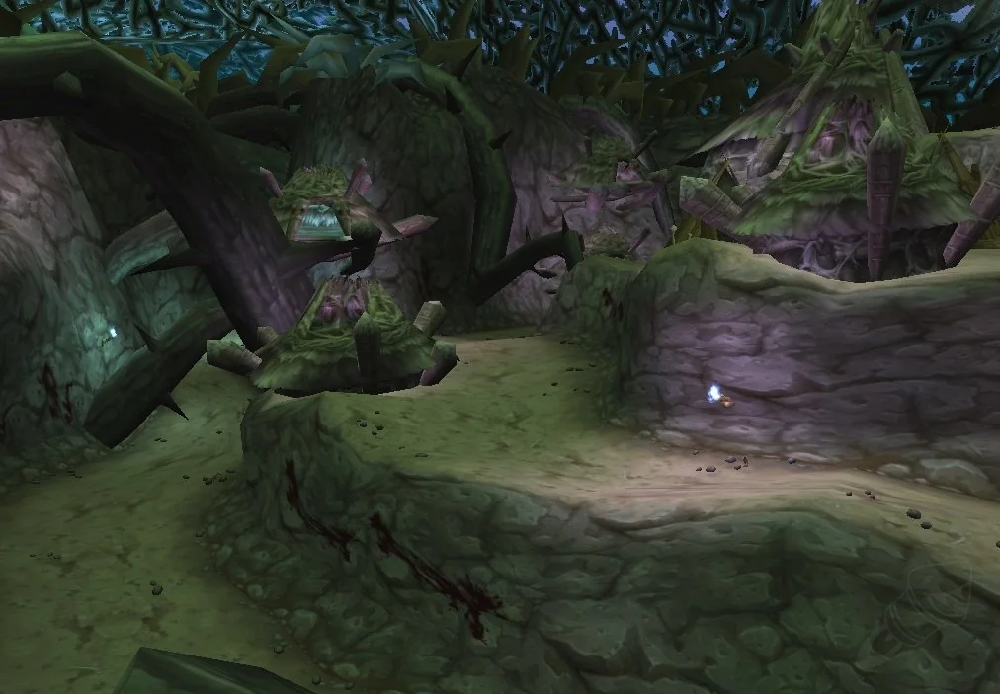
Razorfen Downs. The quilboar warrens are built as settlements rather than as spawn grids, which is the standard the middle tier should hold.
Reference · Razorfen DownsThe thing that ruins an event is a visible timer. If players can schedule around it, it stops being the world's business and becomes content queued up for them. So flare-ups are driven by conditions the player cannot see, accumulating quietly, with no counter, no bar, and no announcement. Most of the time nothing happens, and when it does there is a good chance you are not close enough to participate.
Westfall is the strongest candidate, because the Defias and the Riverpaw are already there and already hostile. Track recent Defias deaths as a proxy for the gang looking weak, and past a threshold a one-time raid spawns with both sides fighting each other rather than the player. If you are nearby, you see it. If you are not, you arrive later to find gnoll and Defias corpses tangled together and have to work out what happened. The second outcome is arguably the better one, and it will be the common one.
Desolace deserves special attention, because vanilla already built the mechanic and then hid it in a reputation grind. The centaur clans are mortal enemies by design and each kill moves the opposing bar. The feud is fully specified and completely invisible in the world.
Flare-ups and quest integrity
A flare-up that eats a quest objective is a bug wearing a feature's clothes. Named NPCs are never casualties. Casualties come from generic spawns only, capped as a fraction of the camp. Respawn accelerates rather than pauses, because the player who arrives afterward did not opt into the event. And a flare-up cannot fire on a camp with players in combat inside it, which also means the player generating the hidden condition has to leave before the event pays off.
Choosing between three kinds of world state
Cyclical state is the default at every level. It answers the hardest objection against a living world, which is that a game with a continuous supply of new players cannot ratchet. Anything permanent is a door that closes behind the people who were there. A cycle closes no doors, and it produces knowledge no static world can: a veteran who says the Defias are worse than they were is describing something true and checkable.
One-way additive events are permitted when nothing is removed. The gates of Ahn'Qiraj are the proof. The useful lesson is not that permanent change is for max level, it is that permanent change must be additive. Finishing the Lakeshire bridge would be safe at any level, because a finished bridge takes nothing away.
Phasing is almost never correct. It gives each player a private copy of world state, and it is the specific technology that made the modern game's world feel lonely. A flare-up matters because the person you tell about it can go and see it.
The common outcome rather than the rare one: gnoll and Defias corpses tangled together after a raid the player was not present for.
A timber wolf in Ashenvale drops silver coins. Nothing in the fiction explains this, and it breaks immersion at a rate of several times per minute during leveling.
Beasts drop no coin, ever. Bandit humanoids are the primary gold source, because the Defias, the Syndicate, the Bloodsail, and the Southsea pirates are written as organized criminal enterprises and should be where money physically is. Cultists drop reagents and minimal coin, because they are fanatics rather than looters. Zones carry economic character too: Westfall is poor across the board, Un'goro has no coin at any level, and Stranglethorn is conspicuously plentiful, which is what makes the other two read as intentional rather than stingy.
Swallowed remains are the exception that makes the rule work. A very low chance for a predator to yield something it ate rather than something it owned: a gnawed silver coin from a Duskwood wolf, scorched research notes from a devilsaur, Bloodhoof-marked jewelry from a Thousand Needles predator. Everything comes up bent, tooth-marked, or partly digested, and the flavor text does the storytelling with no quest attached.
Anatomy that reads from the outside
Vanilla's materials divide into legible and illegible. Herbs, ore, leather, and cloth are all visible from outside the creature or the node. Venom sacs are not, and neither are flame sacs, ichor, glands, or hearts. The item is the only evidence that the anatomy exists at all.
The strongest fix costs almost nothing, because the information is already in the combat log. If a creature envenoms you, it has a venom sac. Tighten that correlation until it holds without exception and every poison debuff a player has ever taken becomes a drop-table lesson they learned without being taught.
The instinct with an undifferentiated reagent is to split it into spider, scorpid, and serpent variants. Do not. Bag space is the real currency of the vanilla leveling experience, and fragmenting one reagent into five spends the player's scarcest resource to buy texture.
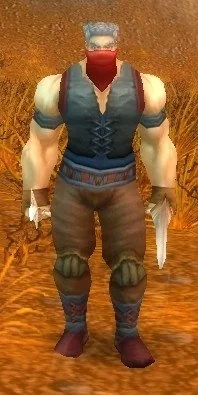
A Defias highwayman carries the tools of the job he is doing. Loot logic asks only that what drops is what he was seen holding.
Reference · Defias Brotherhood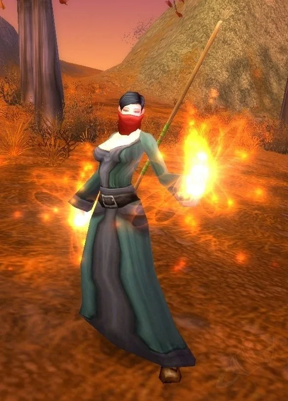
The pillager casts, so she should drop what a caster carries. The rule is legibility rather than generosity.
Reference · Defias BrotherhoodSystems imported from The Burning Crusade forward get rebuilt around vanilla's mechanics rather than transplanted. Gem sockets do not exist in Classic, so jewelcrafting has to be a finished-goods profession: rings, necklaces, and trinkets crafted whole, competing against dungeon and quest reward jewelry rather than augmenting existing gear. Inscription produces scrolls and offhand codices instead of glyphs, which keeps it away from the talent system entirely.
Woodcutting gives lumber an economic identity instead of leaving it as Venture Company backstory, supplies the cart network with a crafted input, and creates direct competitive friction with the Windshear Crag operation, since players and goblins would be stripping the same forests. Trapping is the only proposal in this document that interacts with the wildlife systems without killing anything.
Keeping low-level goods valuable
Peacebloom becomes economically worthless the moment a player outlevels Elwynn, even though it keeps growing there forever. Blended recipes cut expensive components with cheap bases the way real formulation does. Dual crafting paths offer the same output fast and expensive or slow and cheap. A level sixty alchemist going back to farm silverleaf because it is the cost-effective route, not because a quest sent them, is the goal state.
Separately, coarse thread, weak flux, and empty vials are bought from vendors and produced by no player. Every one of those transactions is a dead gold sink that bypasses the player economy. Vanilla already treats crystal vials as a tradeable commodity of some standing. The game knows these are goods. It just does not let players make them.
Wandering trainers and the problem with hidden content
Every leatherworking specialization master already sits in a wilderness camp. The pattern is in the game. It is just nailed to the ground. A wandering trainer is a traveler first and a trainer second: she makes camp, eats, packs, leaves. A player who happens to be in Thelsamar the week she is there gets something. A player who was there last week finds out from a guard that he missed her.
The honest problem is that a trainer on a fixed route gets datamined inside a week. So the route is not fixed: she picks each next stop from a small weighted set, and the community can learn her territory without being able to predict tomorrow. The goal was never that players cannot find her. It is that finding her is a thing you do in the world, using the world, rather than in a browser tab.
Selling to an NPC vendor stocks that vendor's inventory rather than deleting the item and conjuring gold from nowhere. Shelves reflect what has actually been sold locally, and they can run dry. If nobody has been supplying flux in Ironforge, Ironforge runs low on flux, and a player who notices can import from somewhere with surplus. That is emergent commerce created by nothing more than a stock counter.
The obvious failure mode is a guild flooding one vendor to crash local prices, or starving one to manufacture a shortage. The mitigation is a soft cap: a vendor pays well for the first N of an item per day, then its buy price drops sharply. That makes mass dumping unprofitable without penalizing a normal player offloading crafting byproducts, and it means manipulation requires sustained coordination rather than one afternoon.
A wagon that completes its route credits stock to the destination's vendor pool. A wagon that does not arrive does not.
That single sentence is the payoff for building the cart network at all. An intercepted Ironforge shipment means Ironforge is short on flux the following week. Nothing announces it. It is simply true, and it is noticeable to whoever went to buy flux. This is the first mechanic in the document where one player's action changes what a different player finds on a shelf, without either of them knowing about the other.
The interdiction the lore already ran
Westfall's poverty is canonically a supply interdiction plot. Onyxia, from the shadows as Lady Prestor, cut off supplies and support to keep the Defias enraged. What the player sees is wagons that should reach Sentinel Hill and do not, and a vendor whose stock stays thinner than any comparable settlement's for reasons observable on the road rather than stated in quest text. A zone that is being starved on purpose is more interesting than a zone that is simply poor.
Azeroth's zones have fixed weather. Elwynn is always late spring, Winterspring is always deep winter, Tanaris is always noon in a desert. The world has climate but no calendar, which means it has no sense of time passing at all.
The model is one rule applied everywhere rather than a pile of per-zone exceptions: latitude for temperature plus a per-zone moisture value. The correction found while working Kalimdor zone by zone is that latitude alone predicts the bottom of both continents is productive, which is wrong. Tanaris and Silithus sit at the same latitude as Un'goro and they are desert. Moisture is what decides whether a warm zone is jungle or sand. Two dials instead of one, and still buildable.
The full classification of both continents into full turn, muted pulse, and arrest is set out in View 6 below.
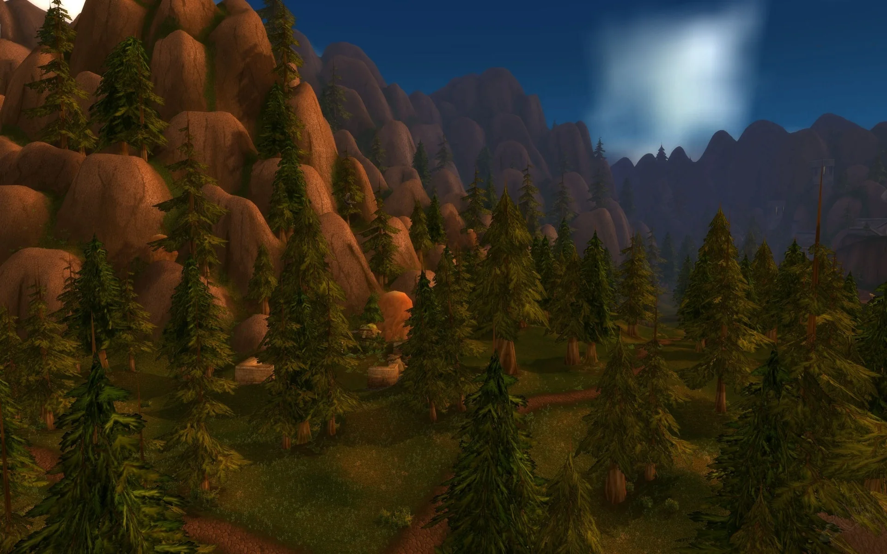
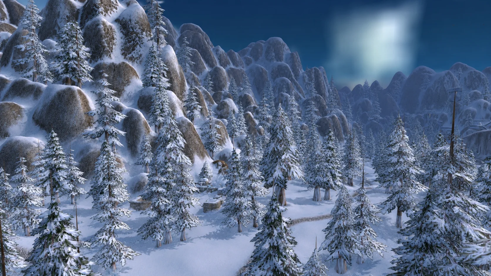
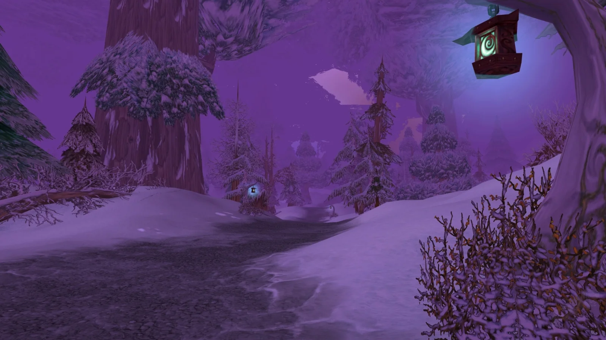
Winterspring is already permanently in one season, which is why it is the control case rather than a candidate. Snow here means nothing changed.
Reference · Winterspring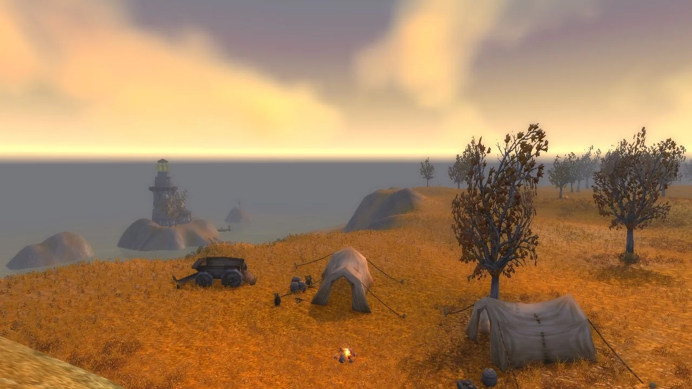
Westfall does the thematic work by itself. The fields still turn while nobody is left to harvest them.
Reference · WestfallThese proposals are not equally expensive, and more importantly they are not equally reversible. A live-service game can patch in animation work indefinitely. It cannot casually retrofit a new economic model onto a server that has been running for eight months on the old one.
The fresh-realm-as-testbed model resolves the Tier 3 problem cleanly, and Blizzard has already run the play. Launch Tier 3 changes only on a new realm, run Tier 1 and Tier 2 as ongoing content, and fold forward what works. The important constraint is that folding forward should require player appetite on the originating realm, not just internal enthusiasm. A system that works mechanically but that its own playerbase does not want is not a success.
The tiers are written as pre-launch advice, and that framing has a problem: if Classic+ is already built and running, Tier 3 stops meaning risky and starts meaning too late. So the rest of Section 11 assumes the game shipped and asks a different question. Not how risky is this, but what can be added to a live world, in what order, and what does each addition require to already be there.
Additive versus revisionary
The distinction that matters in a live game is not cost. It is whether a change invalidates something players have already learned. Additive changes put something in the world that was not there, and a player who knew the old world is not wrong about anything. Revisionary changes alter something already known and are expensive in player trust rather than in engineering.
This cuts across the tiers rather than aligning with them. The behavioral tell audit is Tier 2 by engineering risk and nearly harmless in isolation, but it relocates drop sources players have had memorized for twenty years. Conversely, material camps are new locations that take nothing away, so despite touching the world map they are as safe as an animation pass.
Hooks and the proposals that split
The thing that cannot be retrofitted is not a system, it is a hook. A per-zone climate state, a route and cargo entity, vendor stock stored as a variable rather than a constant. Any of these can ship inert, doing nothing visible, costing almost nothing. Ship the hooks even when the systems are years out, and ship them switched off. That is the cheapest decision in this entire document and the only one that expires.
Several proposals appear in more than one deployment bucket, and that is not indecision. The visible half can ship to live now, the consequential half needs a fresh realm. Carts as traffic are scenery; carts as the thing that determines vendor stock are architectural. By the time the consequential version launches, players have spent months seeing wagons on the roads, so the system arrives already legible instead of needing to teach itself.
Every other section proposes a system. This one proposes a stance, because the systems will be built by someone with an art budget and the way that budget gets spent will decide whether any of it looks like Classic.
Retail's problem was never polygon count. It is that higher fidelity pushes everything toward a single house style, because detailed assets are expensive and expensive assets get reused. Classic reads as characterful partly because the art had to carry meaning through silhouette and color rather than surface detail, and silhouette is what actually reads at distance across a zone.
Spend the art budget on variety, not fidelity. Same texture resolution, same polygon budget, more distinct assets.
Southshore and Darkshire are both human and should feel almost nothing alike. What separates real buildings inside a single culture is four practical constraints, and vanilla has all four available and unused: materials, meaning whatever is within hauling distance; climate, which mostly means roof pitch; threat, which is the most legible of the four; and age. A player should be able to guess how dangerous a region is from the buildings before meeting anything in it.
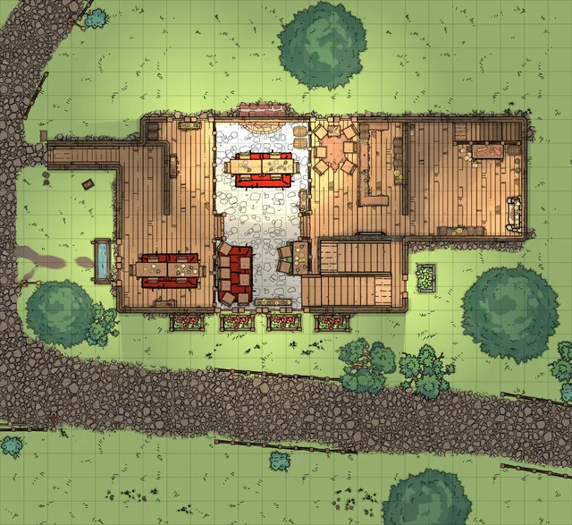
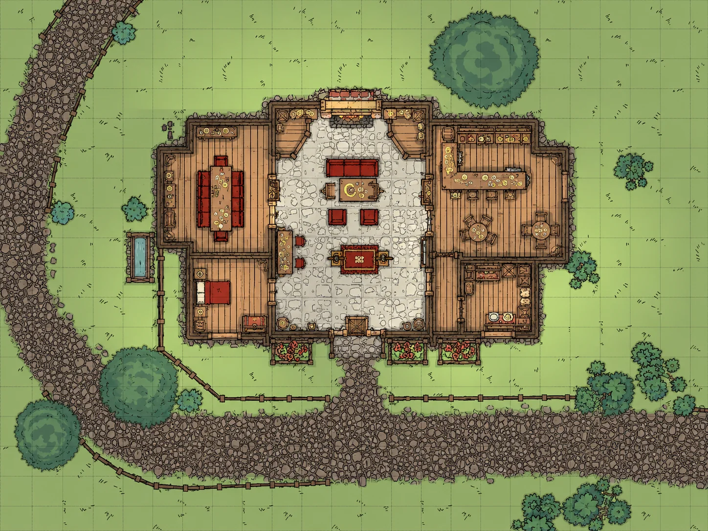
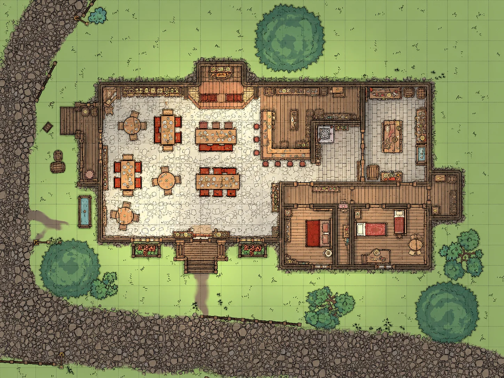
Where the material comes from
The game already did this once, completely. Durotar has no forests, Orgrimmar is built from timber, the Warsong log Ashenvale, and the route is already drawn from the Lumber Camp through Mor'shan Base Camp and south. Warsong Gulch is a battleground fought over construction material. Vanilla built one complete material chain, made a battleground out of it, and then never applied the idea to a single other settlement.
Sentinel Hill needs timber and Westfall has almost none. Putting a logging camp near the Duskwood bridge is correct; adding trees to the southern hills is a trap. Westfall's treelessness is the zone's entire character, and adding a local supply solves a problem the zone exists to have. The external camp makes the dependency visible and gives interdiction something concrete to cut. Timber crossing that bridge is also timber from a cursed forest, which is a better explanation of Sentinel Hill's character than any amount of art direction.
The world grows and gets smaller. Expansion zones ship in batches tied to a level bracket, are placed outside the existing world so they inherit no traffic, carry one-time content, and get invalidated by the next expansion. The active portion is always the newest slice and everything behind it is scenery you fly over.
Vanilla accidentally ran the experiment. Un'goro stays busy because of herbs and crystals. Winterspring stays busy because of Everlook and Black Lotus. Meanwhile Loch Modan, Redridge, Darkshore, Stonetalon, and Thousand Needles are ghost towns above level 30. A zone survives if it has a reason that is not leveling. One is usually enough. None is fatal.
A patch can add one zone, and it can add it inward.
The vanilla map is full of gaps, closed gates, and places the world points at and never lets you reach. An inward addition inherits the existing road network, has no clean level bracket, is purely additive, and is already promised. The wall, the gate, and the locked door are all in the game. That is this document's method applied at the largest possible scale: everywhere else the argument is to show what the lore already asserts, and here the lore asserts a place and the map draws its front door.
The clearest doors are Karazhan from Deadwind Pass, where the tower is modeled and standing and was cut from vanilla for time; the Emerald Dream from the four Dream Gates placed in patch 1.8, which are guarded and lead nowhere; Gilneas behind the Greymane Wall; Grim Batol from the Wetlands; Quel'Thalas past the blocked Thalassian Pass; and Azshara, which is not a closed door but an unfinished room.
A world buff is a reward for having been somewhere. The head of an enemy of the realm is carried to a city gate and cried from the steps, and for two hours everyone within earshot fights a little harder. A songflower blooms in Felwood and whoever finds it is the better for the rest of the afternoon. These are the strongest argument the game makes for leaving the capital, and the raiding of them turned that argument inside out.
What went wrong was never the buffs. It was what a raid roster did with them. A guild that expected them required them, so the hours before a raid night went on standing in Orgrimmar waiting for a horn, and a player who lost one to a disconnect had lost the evening rather than a bonus. The reward for going out into the world became a toll paid before being allowed to play, which is the opposite of what it was for.
Here they are suppressed on entering a raid instance or an instanced battleground, and restored on leaving. They are not lost.
Dungeons are untouched, and so is the world itself, so a buff still pays everywhere it was earned. Season of Mastery suppressed world buffs in raids and did not give them back; Classic Era banks them through an item the player has to remember to carry and use. Restoring them on the way out asks nothing of anyone and removes the part that made them resented, which was the prerequisite and never the buff. Boss health is tuned as though the raid were unbuffed, because it is.
Everything above this point is behavior laid over the world as it already exists. This view is the other half of the argument: the map has room, and most of the room is land vanilla shipped as a border rather than as a place. Each of these is a community map of a proposed zone, drawn against the real terrain and marked with the same vocabulary the client uses for quest hubs, dungeons, and raids.
They are included as scope, not as specification. A living world that gains nine zones needs the systems in sections 1 through 10 more than a static one does, because nine empty zones is nine times the emptiness. The dependency runs in that direction and not the other.
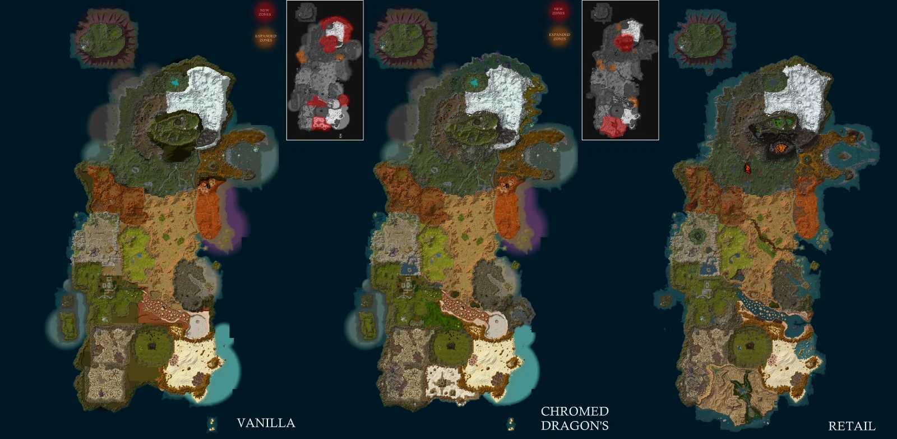
Vanilla, the expanded proposal, and retail side by side. The middle column is what the map looks like when the borders become zones. New zones and expanded zones are keyed separately in the inset.
Overview · Eastern Kingdoms and Kalimdor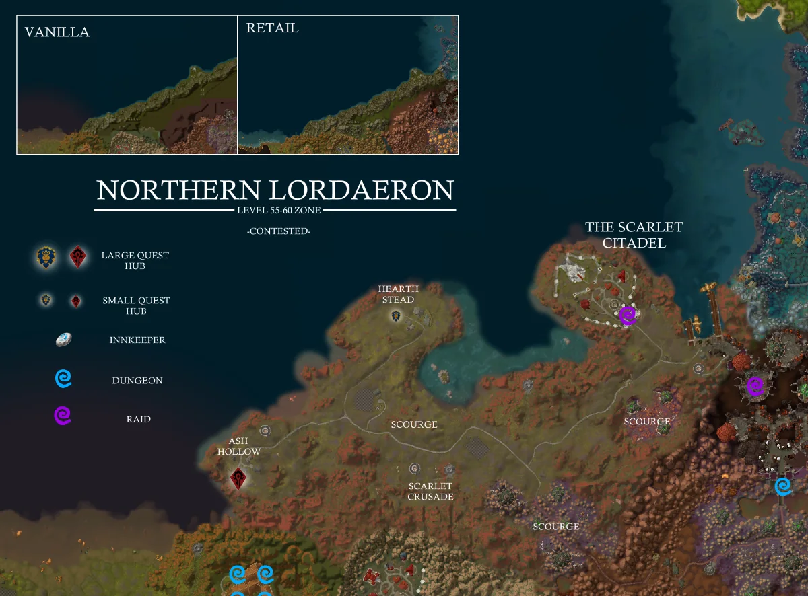
Northern Lordaeron, level 55 to 60, contested. The Scarlet Citadel as a raid, Hearth Stead and Ash Hollow as the two hubs, and Scourge holding the middle.
Proposed zone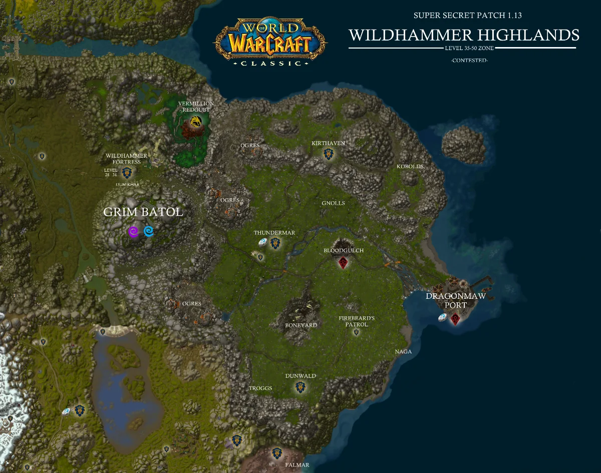
Wildhammer Highlands, level 35 to 50. Grim Batol as a dungeon and a raid, Thundermar and Bloodgulch facing each other across the same river.
Proposed zone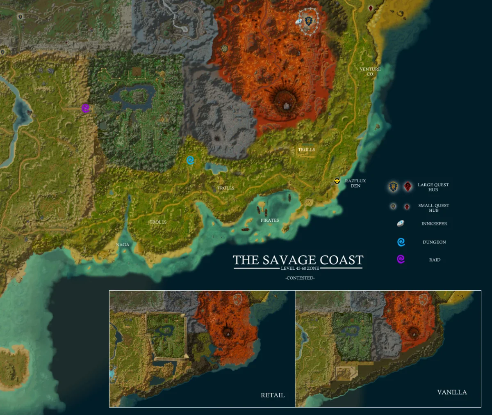
The Savage Coast, level 45 to 60. Trolls, naga, pirates, and Venture Company on one shoreline, with the retail and vanilla terrain shown underneath for comparison.
Proposed zone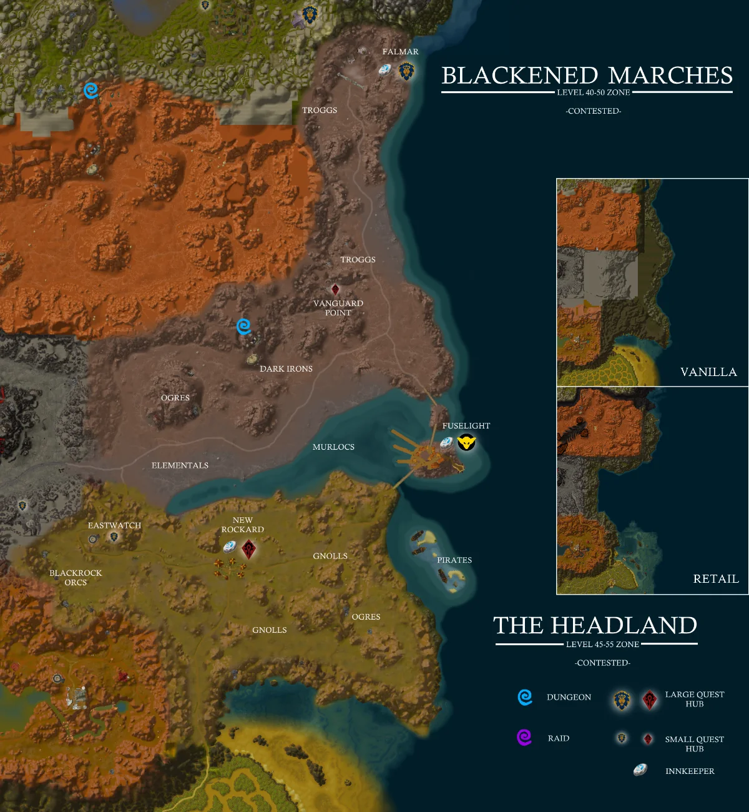
The Blackened Marches at 40 to 50 and The Headland at 45 to 55. Dark Irons, troggs, and the Blackrock orcs on one side of the water, gnolls and pirates on the other.
Proposed zones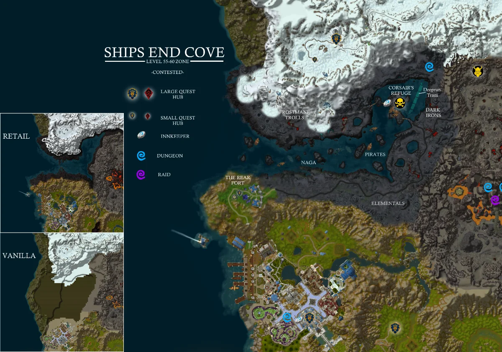
Ships End Cove, level 55 to 60. A working harbour north of Stormwind, Corsair’s Refuge on the Deeprun line, and Frostmane trolls above it.
Proposed zone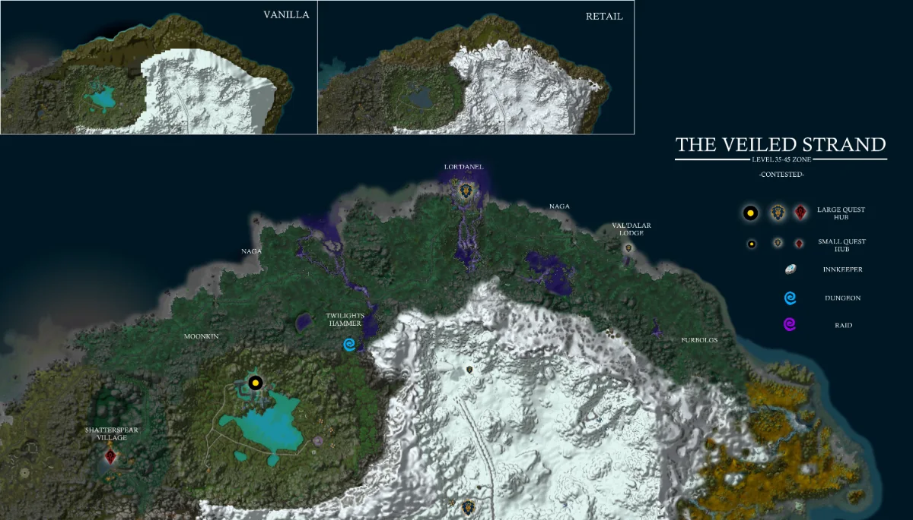
The Veiled Strand, level 35 to 45. Lor’danel, Shatterspear Village, and the Twilight’s Hammer dungeon on the north Darkshore coast.
Proposed zone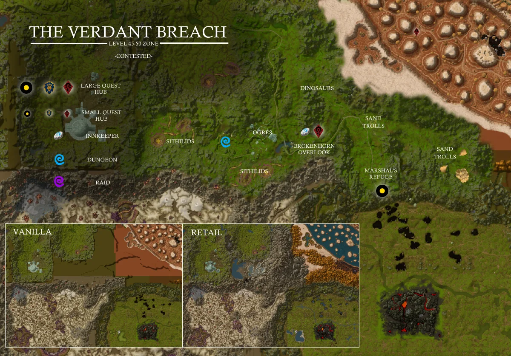
The Verdant Breach, level 45 to 50. Un’Goro pushed outward into sand troll and dinosaur country, with Marshal’s Refuge still the neutral hub.
Proposed zone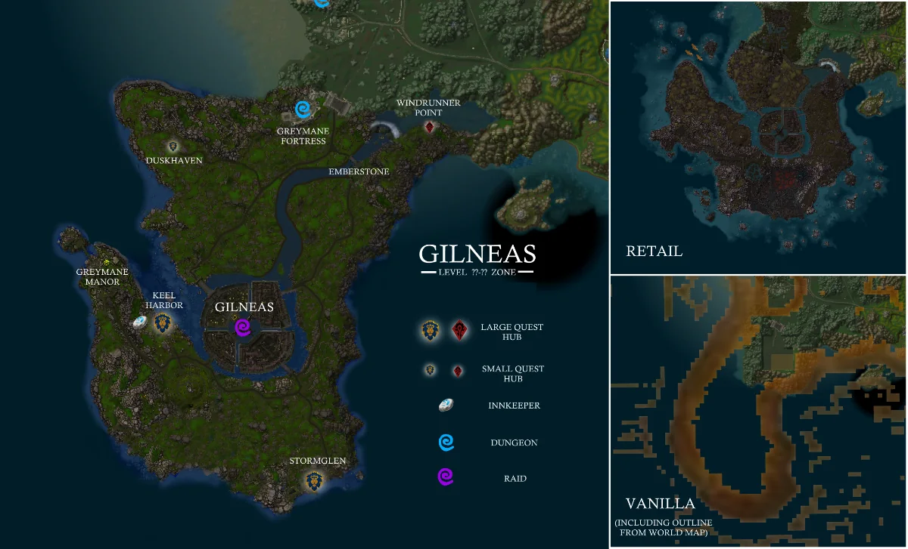
Gilneas, no band assigned yet. The wall exists in vanilla as a closed door, and the land behind it is drawn here against the retail terrain. It waits on a reason to enter at sixty.
Proposed zone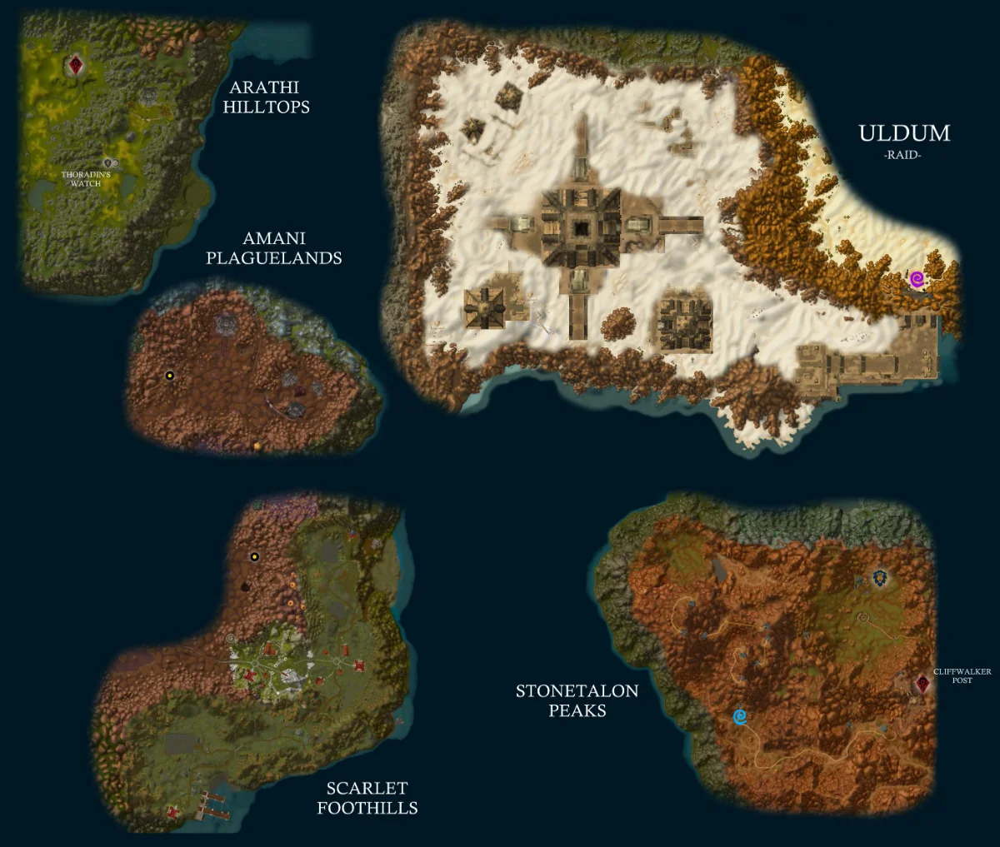
Five more at a glance: Arathi Hilltops, the Amani Plaguelands, Uldum as a raid, the Scarlet Foothills, and Stonetalon Peaks. Uldum is the only entry on these maps that is a raid rather than a zone.
Proposed zones · SheetTwo more, not yet drawn
Northrend and Outland both sit outside the nine zones above, and both are deliberately different propositions. Northrend here is a reworked continent at much smaller scope than the one Wrath shipped, closer to a handful of zones than to a full expansion. Outland is the older question and the harder one, because the Dark Portal is already standing in Blasted Lands and already goes somewhere.
Northrend at reduced scope. Fewer zones than Wrath, sized to a patch rather than to an expansion, and reachable without the continent becoming the only place anyone plays.
Outland through the Dark Portal, which vanilla already models and already guards. The scope question is which side of the portal the content sits on rather than whether the door exists.
The dividing question is not how big a change is. It is what could go wrong that reasoning alone will not catch. Three deployment paths on a running game, sorted by that.
{{ col.title }}
{{ col.count }}{{ col.blurb }}
{{ g.hint }}
{{ p.title }}
Ordered by dependency rather than by cost, because each layer is what makes the next one legible. Material chains do not parse if every settlement still looks alike. Seasons do not land without ambient life to react to them. Shipping a later layer first does not break anything, it just wastes it.
{{ L.title }}
{{ L.blurb }}
{{ p.title }}
The dependency graph is read from the dataset rather than drawn by hand. Tiers run top to bottom, no edge runs backward, and arrow weight is transitive downstream reach. Solid gold edges carry cargo. Thin dashed edges mean the source makes the target possible.
Nodes carry the document's own section numbers, and the counter in the corner is how much rides on that node. Select one to dim everything that is not a neighbour.
Filter on any axis. The filters combine, so the useful question is the one that crosses them: which Tier 3 work is additive, or which low-cost proposals still need a fresh realm.
Specificity over abstraction is the first constraint in the document, so every proposal names ground. Select a zone to filter the browser above to it.
The instinct is a binary: a zone either turns or it sits out. That is wrong, because nothing in the world actually sits still. Weather does not stop at a zone border and neither does the sun. A zone held frozen by magic is being held against something, which means there has to be a something for it to be held against.
So three tiers instead of two, worked zone by zone across both continents. The third tier only works because the second one exists: give Dun Morogh and Stranglethorn a faint pulse and the Plaguelands become the only ground in Azeroth not doing the thing every other place does.
{{ t.title }}
{{ t.count }}{{ t.blurb }}
{{ z.name }}
{{ z.note }}
Behavior over numbers
What a talent point should buy, and 27 vanilla trees rebuilt to the answer. Version 1.0, August 2026.
The document above describes a world. The document below argues that post-vanilla classes should arrive as trees rather than as classes. This one sits upstream of both. Its claim is that a talent point should buy behavior and never a number, and its evidence is all 27 vanilla trees rebuilt to that rule, in order of severity. What follows on this page is the five constraints the rebuild accepted, two audit views that measure what a vanilla point buys and show one tree before and after, the eight proposals that carry the rule into the trees, and the 27 rebuilds with their diagnoses and floors. The class document inherits its rules and the simulation document tests them. The calculator at the bottom of the page holds every tree in full.
The tree structure stays: three trees, seven tiers, five points per tier to advance, 51 points at level 60, a capstone at tier 7. A player who last logged out in 2006 should open the panel and recognise it. What changes is what the nodes contain.
The tree shape is not the problem and does not change. Seven rows, five points to advance, one capstone.
This is not a departure. The panel a returning player opens is the panel they remember.
Behavior, never numbers. No talent should exist whose entire text is a percentage.
Flat stats stay in the game and stop being purchased. They are granted for depth in a tree rather than bought with a point.
Net neutral against a canonical vanilla build. A redistribution of what points do, not a buff.
The complaint is usually stated as a feeling. The number is worse than the feeling. Every node in all 27 vanilla trees is tagged by what it buys: a number, an effect, or a button. The dataset is parsed from a 1.12 talent calculator, and the classifier agrees with an independent hand audit of Arms exactly.
A harder measure than counting flat points is the forced-flat floor: take every behavior talent the moment it becomes available, fill with flat only when nothing else is legal, and count. That number is the minimum filler the tree forces on the way to its capstone. No build, no preference, no argument. The floor for the selected tree is shown below the grid, and it is a lower bound rather than a prediction: rogue proves a healthy tree can still produce flat builds when the flat talents are simply stronger.
{{ auditDetName }}
{{ auditDetTree }}{{ auditDetText }}
{{ auditFloorLine }}
{{ auditFloorMeta }}Tiers 5 and 6 are banded in every tree on this page. A tier gate is points already invested, so owning a tier-N talent costs 5(N-1) plus 1: tier 7 is 31, tier 6 is 26, tier 5 is 21. A 31/20 split therefore reaches tier 4 rather than tier 5. The shapes that reach the seat are 30/21 and 26/25, and both canonical vanilla warlock raid builds take the second one.
One control, two states, the same seven rows. The rebuild holds 52 available points against vanilla's 59, two of them the Guarded Stance reciprocal that reads Protection, and keeps the same two buttons, Sweeping Strikes and Mortal Strike. Everything else stops being a percentage. Row assignments are illustrative and have not been checked against a calculator.
Tier 4 is where the argument is easiest to see. Four weapon specialization nodes and 20 points collapse into one node and 5, and the choice moves from the talent panel to the weapon in your hand. That fork is now the most reused pattern in the rework, shared by Arms, Fury, Enhancement, Combat rogue, and Bladedancer.
Arms was the wrong tree to rebuild first, and the document says so in its own voice. At 12 of 30 forced flat it is one of the healthier trees; Marksmanship went first instead, being both the flattest tree in the game and its class’s mandatory raid spec. Arms survives here as the record of how the method started.
{{ armsDetName }}
{{ armsDetTree }}{{ armsDetText }}
{{ armsDetSim }}
{{ armsDetNote }}
Four eras of talent design and three other games sit behind these. Vanilla had progression without meaningful choice, Mists of Pandaria had choice without progression, and Dragonflight got both and paid for it with permanence. Diablo 4's Lord of Hatred, shipped April 2026, is the closest case study: it stripped every dedicated passive node out of the class trees and moved raw scaling to items and Paragon, on the stated reasoning that legacy passives diluted combat engagement.
Separation of concerns is the whole trick. Gear carries the numbers, tree depth carries the passive curve, talent points carry behavior. Vanilla has all three doing all three jobs, which is why none of them feels decisive.
The depth dividend
Every point spent in a tree grants an automatic passive appropriate to that tree. Fifteen points in Fury gives you the Fury curve, and which fifteen is irrelevant. Every flat bonus currently sitting in the trees goes here. The coefficient is set by summing what a canonical build already buys, so the character ends up with the same numbers and roughly sixteen points come free.
Ranks stack effects
Multi-rank nodes stay. A rank adds a discrete effect rather than increasing a number. Improved Rend becomes Bloodletting: rank 1 ignores armor, rank 2 lets Overpower refresh it, rank 3 dumps the remaining damage when the target falls below 20%. Same node, same three ranks, nothing scales. This is roughly 150 nodes across nine classes and it is the largest line item in the document.
Tier 5 is the hybrid seat
A tier gate is points already invested, so a tier-N talent costs 5(N-1) plus 1. Tier 7 is 31, tier 6 is 26, tier 5 is 21. An earlier draft read 51 minus 31 as 20 and called that the tier 5 seat; 20 points reaches tier 4. The budget offers two honest shapes instead: 31/20 for a capstone and a shallow second tree, or 30/21 and 26/25 for no capstone and two deep talents. Warlock is the only vanilla class with two competing viable raid builds, and both take the second shape.
Subtraction talents
Two per tree at most, optional rather than capstone, because a forced subtraction reads as a nerf while an optional one reads as a choice. Sure Strike removes your ability to critically strike and in exchange your attacks can never be avoided. Shadowform is the vanilla precedent, which means the design space is already established in the era.
World-facing depth rewards
Talents that do not help you fight are never taken, so world-facing effects are not talents. They ride on the depth dividend at 15 and 30 points. A beast mastery hunter reads where a zone's beasts moved with the season. A subtlety rogue can pickpocket caravan drivers. Each depends on a world system from the first document, and the list is cut entirely if those systems do not ship.
Unconventional builds and the dividend curve
The dividend curve is linear, so spreading points costs no stats: a 26/25 build and a 31/20 build receive the same dividend total, and the difference lives entirely in which talents they own. Depth is rewarded by discrete talents, never by an accelerating curve. The checkable rule: two tier-5 seats plus a tier-2 should land in the same band as a capstone plus a tier-4. The simulation document holds this to sixty of sixty cells.
Revealing interdependencies
Cross-tree interdependencies are found rather than read, and the game tells you about them somewhere other than a tooltip. Nothing stays secret past launch week, so the fiction of learning is the reward, not the information. The binding rule: a cross-tree conditional may never be the reason to take the talent it sits on. The talent is worth its points alone; the conditional is upside. Ignorance costs upside, never correctness.
One set of talents for both modes
No PvP-only nodes, no PvP branch, no assumption that future gear bridges the gap. Prefer graded effects to binary ones: a slow or an armor reduction works on a boss at reduced relevance, a stun works at zero. Where a binary effect is the right fantasy it keeps a graded fallback that lands on an immune target. Three checks for any rewritten talent, and most trees needed one change or none.
All 27 trees, rebuilt in order of severity rather than of interest. Three are told in full below because each demonstrates a different part of the method; the other 24 get their diagnosis and their floor, and the full trees are in the calculator at the bottom of the page.
{{ e.title }}
{{ p }}
{{ d.name }}
§ {{ d.section }}{{ d.diagnosis }}
Class absorption
New archetypes as trees, not classes. Version 1.2, August 2026.
One document describes the world. This one describes something you go into that world to get. Every tree here is acquired through a chain running through named vanilla locations, which is why they share a page.
There are ten trees, of two kinds, and the distinction matters enough that the document gives it its own section. Seven are absorbed: a post-vanilla class collapsed into a tree its host class acquires. Three are original, built for classes that absorb nothing: Chronomancer for mage, Dreamer for druid, Radiance for priest. All ten are in the expanded configuration. The original trees carry the heavier burden of proof, since no shipped version stands behind them, and the simulation below holds Dreamer and Radiance to it: both are in band, Radiance on its healing score with the combined score reported beside it.
Metamorphosis is adapted from the Warcraft III Demon Hunter ability and is visually based on Illidan's demon form. Blizzard implemented it as a Demonology warlock talent in Wrath of the Lich King, at the bottom of the tree, where it sat for three expansions as the defining ability of that spec. It was removed from warlocks in patch 7.0.3, specifically because the Demon Hunter class was being introduced.
So the direction of travel is the reverse of what people assume. The demon hunter fantasy lived inside an existing class first, worked there for years, and was taken out to make room for a class. This proposal is not inventing anything. It is declining to make that trade.
Three more precedents sit behind it. Druid shipped in 2004 as one class containing three roles, three armor-relevant forms, and three separate resources, which demonstrates the exact technology this depends on. Season of Discovery gave vanilla classes roles they never had through runes, and delivered warlock tanking through a chain running Redridge, Darkshore, the Barrens, Shadowfang Keep, Blackfathom Deeps, and a summoning ritual at Demon Fall Ridge. And The War Within introduced hero talents: subtrees layered onto existing classes, shared between two specs rather than owned by one, which is the fluid model arrived at independently twenty years later.
Each tree holds seven tiers. The first is open from the first point, and every tier after it asks for five more points spent in the tree, so the twenty-point mark costs twenty-one points to reach and the capstone costs thirty-one. Each tree carries two talents worth building toward rather than one. The mark at twenty is the hybrid’s prize and works without deep investment; the capstone is a thing a character either has or does not.
No absorbed tree brings a new resource bar with it. Each one layers a mechanic of its own onto whatever the host class already spends, the way combo points and soul shards already do.
Measured against the vanilla trees they sit beside, not one of the ten spends a point on a flat number, where 73% of vanilla’s points do. Every one of them puts at least eight points at the twenty-point mark, gives two thirds of its points or more to the mechanic it is named for, and closes at least one door for good.
Between 66% and 79% of every tree’s points engage the mechanic it is named for. Conduit gives two thirds of its points to empowering, Metamorphosis more than three quarters to fel corruption, and no tree here is named for something it barely carries.
At least eight points sit at gate 20 in all ten trees, enough that a character who stops there has bought something real. It is what a hybrid reaches for without committing to a capstone, and the reason a second tree is worth twenty-one points rather than nothing.
Each of the ten carries at least one subtraction node, a talent whose cost is written as a real effect rather than as flavour. Damnation turns the healing a blackguard would receive into damage and stops them being healed at all. Sole Survivor arms a trapper’s traps instantly and takes the pet away.
{{ treeName }} on {{ treeHost }}
{{ treeConcept }}
{{ treeMechanic }}
{{ treeVerb }}
{{ treeVerbNote }}
{{ treeGate }}
{{ treeGateNote }}
{{ treeCost }}
{{ treeAnchors }}
{{ forkNote }}
{{ forkLabel }}
{{ forkConsequence }}
{{ detName }}
{{ detText }}
{{ detNote }}
{{ detLockReason }}
Every talent in reading order
{{ t.name }}
{{ t.rankLabel }}{{ t.text }}
{{ t.note }}
The temptation is one formula: a long chain, an item at the end, done. That would make ten trees feel like ten copies of one quest. Letting the acquisition verb differ is better, because in the fiction it already does. Ten verbs across ten trees, with no two chains structurally alike. That variety is worth more than any individual chain's length.
The profession pairings run the same way. No gate may require the player to hold the profession personally. A warrior seeking a runeblade does not need to be a blacksmith, he needs access to one, and every gate satisfiable by another player is a small ongoing reason for two people to talk.
{{ v.verb }}
{{ v.trees }}{{ v.note }}
{{ v.gap }}Open items
{{ o.text }}
Every tree is acquired through a chain running through named vanilla locations, so the trees join to the world proposals on zone. Below are the places that appear in both datasets. The overlap is modest, and modest is fine. It is the seam, and showing it is the argument that these are one design rather than two hobbies.
{{ j.zone }}
Acquisition chains{{ t.name }}
{{ t.host }}, {{ t.verb }}{{ p.title }}
The simulation
Whether the tuning rule holds, measured rather than asserted. August 2026.
The talent document sets a checkable rule and the class document inherits it: a capstone build and a mid-tree build should land in the same band. This document is the check. It runs three instruments across five fight scenarios at 120 seeds per cell, and 124 of 125 banded cells sit inside -7% to +7%. The one outside is Metamorphosis on switching, at about +12%, and the gap belongs to the build it is measured against rather than to the tree. Affliction loses 27% of its output when the target dies every thirty seconds and Metamorphosis loses 14%, because a build that carries its damage in periodics is punished by a target that dies before they finish. It is named rather than moved, since closing that one cell would push out the four where the tree already sits at or under the line. Necromancy, four cells out in the file two before this one, is inside on all five since it was read as the pet tree its text describes. Radiance is banded on its healing score at the design's emission and inside on all three of its cells; its combined score, its healing with the damage it emits at weight one, is measured and reported beside it and not banded.
The figures are relative, not absolute. The gear blocks are invented, and a real balance check needs Warcraft Logs data as the control. What the numbers can say is whether the design's own rule holds against the design's own trees. It holds for every core pair and on thirty-four of the absorbed trees' thirty-five cells, and it did not hold on first measurement: the Warrior pairs read +22.7% and +33.0% until the cause was traced to the gear calibration's rage economy rather than to a talent. Findings of that kind are what the check is for.
A single-target damage simulator returned no significant difference for seven of thirteen pairs, and that was three separate problems wearing the same result. Burst cooldowns vanish into a 300-second average. Ramp and uptime effects need movement or target deaths to matter. And Repentance is a stun: no damage simulator will ever measure it, and building one that appears to would be worse than admitting the gap.
So a talent's value is its profile across scenarios, not one number. Eleven talents carry an explicit not-simulable flag. Since stage I each is read by its cost, the node forced into the build its role bands against the same build without it, so gain, cost and net are three numbers on every cell; eight carry a priced cost or a priced permission, and four, Repentance, Damnation, Deep Slumber and Fixed Point, stay argued because no instrument prices what they remove.
{{ s.measures }}
{{ s.covers }} · {{ s.cells }}
{{ s.id }}
{{ s.shape }}{{ s.exposes }}
Four policies were priced against the same fifty cells, the ten pairs measurable at the time; the band they chose is applied unchanged to the sixty measured now. A signature-scenario exemption, argued for across four passes, performed worse than simply widening the band and was dropped. The likelier truth was that two capstones were individually overtuned, not that their shape entitled them.
Adopted: a single band of -7% to +7%, every scenario. Tightening from -8 was free, because both bands failed the same four cells before tuning, and tuning cleared them.
{{ p.policy }}
{{ p.violations }}Each row is a capstone build against its mid-tree alternative, 31 / 20 against 30 / 21, across all five scenarios at 120 seeds. Twelve pairs are measurable; the thirteenth, Retribution + Holy, is Repentance and is not a row: it read zero by construction until the row cap put Divine Favor at gate 25, and it reads under a point for the mid-tree build since, the worth of the one Judgement cooldown rank the Holy 21 splash's last point now buys, and nothing of the capstone. This is the tuning rule from talent design 5.6, held: a capstone is worth going deep for and declining one is not a mistake.
The seven new trees are measured the same way: each one spent to 31 with a host tree at 20, against a real two-tree build of the same class. Blackguard answers to Retribution 31 / Holy 20, Necromancy to Fire 31 / Frost 20, Metamorphosis to Affliction 31 / Destruction 20, Bladedancer to Assassination 31 / Combat 20, Conduit to Enhancement 31 / Elemental 20, Runeblade to Fury 31 / Arms 20, and Trapper to Beast Mastery 31 / Marksmanship 20.
Which build a tree is measured against decides the answer. An earlier pass used each class’s best core build, and for four of the seven that build contained the host tree as well, so part of the host’s worth was being read as the new tree’s. Trapper looked 16.6% behind on cleave and Runeblade 8.6% ahead on burst under that comparison, and neither number was about the tree.
Against an opponent that duplicates nothing, thirty-four of thirty-five cells sit inside the band. The one outside is Metamorphosis on target switching, named for a design pass rather than tuned into place. Necromancy sat four cells outside for most of the project and came back in on all five once the instrument read it as the pet tree its own text already described, without a single tooltip changing.
{{ simTankBand }}
{{ simHealNote }}
{{ simChangedHeadline }}
{{ simChangedNote }}
{{ c.talent }}
{{ c.cls }} {{ c.tree }}{{ c.was }}
Here{{ c.now }}
{{ c.why }}
{{ simHybridHeadline }}
{{ p }}
Vanilla, measured the same way, has effectively one pair: warlock. Priest’s Holy plus Shadow is left unwired on purpose, because Shadowform forbids casting Holy spells and wiring it would be symmetry against the game. What the wiring would be called is listed beside the calculator below, and deliberately kept out of the documents: names are earned, not assigned.
Every figure here is a comparison, not a forecast. The gear is invented and the fights are scripted, so a build’s number means something against the build beside it and nothing against a live realm.
Three things are measured: throughput, threat and healing. Everything else sits outside the instrument. A stun is worth real points and no damage simulator will ever award them, so the talents that trade in control are argued in the documents rather than scored, and the eleven clearest cases are flagged in the data as unmeasurable.
The instrument can say a hybrid lands within a few percent of a capstone build. Whether anyone wants to play one is a different question, and it is not asked here.
Every class, every tree, the absorbed tree alongside the three it joins. Fifty-one points at level 60, shared across the whole row. Left click spends, right click refunds, and the row gates enforce themselves, so a build that cannot exist cannot be entered. An arrow is a prerequisite and enforces itself the same way, and each talent's column is placed so that an arrow runs straight down to the talent it gates wherever the rows allow, as the 1.12 client lays its trees out.
The absorbed tree sits in the same panel as the vanilla three on purpose. It is a fourth tree rather than a fourth class, and the only way to judge whether it is splashable rather than mandatory is to spend the points against the same budget everything else spends from.
{{ calcClassName }}
{{ calcTreeCount }}{{ calcSetNote }}
{{ calcSpentLabel }}
{{ calcRemaining }} remaining{{ calcBuild }}
{{ calcAbsorbedName }}
{{ calcAbsorbedNote }}
{{ t.name }}
{{ t.origin }}{{ calcDetName }}
{{ calcDetTree }} What it does{{ calcDetText }}
{{ calcDetRank }}
{{ calcDetGate }}{{ calcDetSim }}
{{ calcDetNote }}
No commentary attached. The talent document lists this node without arguing for it.
Builds worth a name
The rebuilt trees open up far more hybrid builds than Classic had. Twenty-six pairs of trees in the core set are worth building together, against effectively one in Classic, and every one of them can be spent out in the calculator above. Eight come out with a shape distinct enough that players would end up naming it, which is how Classic’s own build names happened in the first place.
{{ p.name }}
{{ p.cls }}Reaches {{ p.reaches }}. Precedent: {{ p.precedent }}.
Appendices
The record behind everything above: the proposals by tier, the lore checks, the visual references, and where each idea came from.
The document closes with every proposal sorted by tier, and the listing here is generated from the same dataset the browser in View 4 reads, so the two cannot disagree. Tier is architectural risk and reversibility and nothing else. Where the document's own table gives a compound reading, Tier 1 by risk and Tier 3 by cost for inward zone additions, or Tier 2 and revisionary for the quest text audit, the split survives here as the cost and change marks under each title.
{{ col.title }}
{{ col.blurb }}
{{ p.title }}
{{ p.meta }}Several common assumptions do not hold for vanilla specifically, and building on them would produce a design grounded in the wrong era. These are the places the document checked, and the places it corrected.
{{ ln.claim }}
{{ ln.body }}
For the inward additions in Section 13, ChromedDragon's Classic zone mockups are the most useful visual reference available for what several of these would look like built to vanilla's art standard rather than a later one. The set is an album on Imgur.
Direct links per named location follow, for screenshots, zone maps, and terrain reference. Where a Classic-specific page exists, the index uses it: Stonetalon, Thousand Needles, Desolace, and Silverpine were all geographically rebuilt in Cataclysm, and the modern pages show terrain that does not exist in vanilla. The links follow the standard Wowpedia URL pattern, and a few may redirect to a merged or renamed page. Where this page carries a plate of the same ground, the entry also points to the section that holds it.
Wowhead's Classic zone pages carry interactive maps with NPC and resource-node overlays, which is the better tool for route and density work and more useful than static screenshots for anything in Sections 2, 3, and 6. The base path is wowhead.com/classic/zone=.
This appendix was added retroactively, and its labels are the ones defined in the talent design document, classic-plus-talent-design.md, so the whole suite is graded on one scale.
Almost everything in this document is one of two things: a premise set at the start of the design, or a piece of vanilla lore the world already asserts and does not show. That second category is the document's whole method, so vanilla precedent is the default and the interesting entries are the ones that are not.
{{ pl.meaning }}
{{ r.element }}
{{ r.label }}{{ r.detail }}